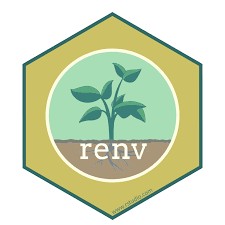

We’re trying to increase total human understanding of the mechanisms that can create poverty, the mechanisms that can end poverty, and how those mechanisms vary by context
We’re trying to empower people with money to spend it in the most efficient way possible to meet their poverty-reduction goals
Other things???
What would this look like in an ideal world?
Authors make their microdata, code, and detailed documentation publicly available
We download this microdata and harmonize it, also adding study-level metadata
We fit a big Bayesian multilevel model to infer treatment effects with lots of interactions on variables we care about
We bring these inferences together with detailed costing data for Bayesian cost-benefit analysis
We publish these results, get rich and famous, get tenure
We make these inferences publicly available via user-friendly tools for nontechnical folks/policymakers
Why can’t we do it that way?
Authors forget what they did, lose their data/code, etc.
Even when we can get data/code, nothing is documented clearly. So it takes a huge amount of work (and code) to harmonize everything.
Sometimes studies are so different we have to gloss over those differences in order to create an analytically-tractable harmonized dataset.
It is often unclear which studies or treatment-level factors drive variation, or how to create a general-enough list of such factors.
Nobody has taught us how to do all this.
What would doing our best look like?
Make sure our code actually does what we say it does.
Make sure other people can find -> run -> understand -> edit -> improve our code.
Make sure we have fun, learn stuff, and don’t burn out.
How do we do it?
Version control
Continuous integration
Test-driven development
Documentation
Teamwork
Functional programming
Free and open-source
‘Track Changes’ on steroids
The most widely-used version control tool for data analysis
Free and open-source
Website where your Git folders live.
Lets your whole team make changes to the codebase in a transparent and organized way.
Free and open-source.

Project-specific package dependency management
Reproducible environments across machines
Isolates project dependencies from system libraries
Pipeline toolkit for reproducible data science workflows
Automatically detects which steps need to be rerun.
Free and open-source.
Automatically standardizes/reformats all the code in the entire project without changing any of its functionality.
Lets you choose whatever formatting rules you want.
Free and open-source.
Automatically checks your code for common bugs, then yells at you if it finds any
Can set it up to run automatically any time anybody tries to make changes to the code, preventing errors
Free and open-source
Set up tests to see if your code actually does what you think it does
Provides a basis for test-driven development – set some milestones, then make sure each step actually works before moving on to the next milestone
Free and open-source
High-level workflow
RA Technical Onboarding
Assigning Tasks
Writing New Code
Integrating That New Code
Technical Onboarding
Assigning Tasks
Writing New Code
Integrating That New Code
Other thoughts
Peoples’ thoughts from yesterday:
Opportunities for team members to keep learning. These tools are widely used, so we do our RAs and undergrads a service by having them adopt them – they will serve them well in any data analysis context, and also are nice resume lines.
Romil: we need more input from PIs during harmonization. Alex: Historically I’ve found GitHub actually helps with this, having PIs all weigh in and engage with each other in a single shared space that is documented forever. They tend to find it an engaging forum.